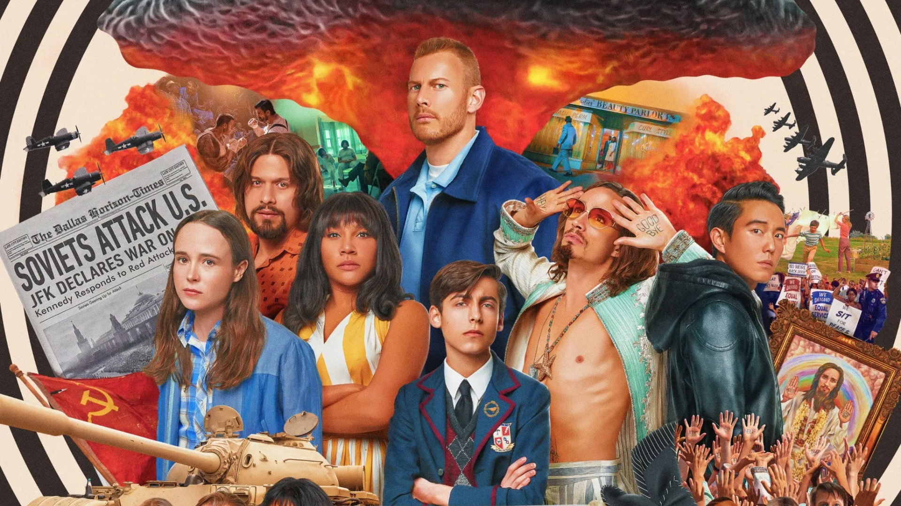

Esta canción no es solo música… es una llave. Cada nota abre un portal directo a nuestra historia, como si el tiempo se doblara solo para dejarnos encontrarnos otra vez. Dale play, mi vida… y siente cómo el universo repite lo único inevitable: que mi amor por ti siempre vuelve.
Aquí puedes poner una imagen especial de Umbrella Academy que te recuerde a ustedes. Puede ser una escena, un póster, o un momento icónico que represente su historia.

Si alguien intentara borrar esta historia, la Comisión fallaría…
porque este amor no es un error.
Este amor es una misión eterna.
Si alguna vez el mundo se rompe…
si alguna vez el tiempo se dobla…
tú solo di: “Juan, vuelve por mí”
y yo seré tu Five… regresando por ti.